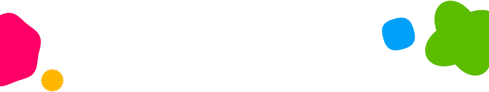
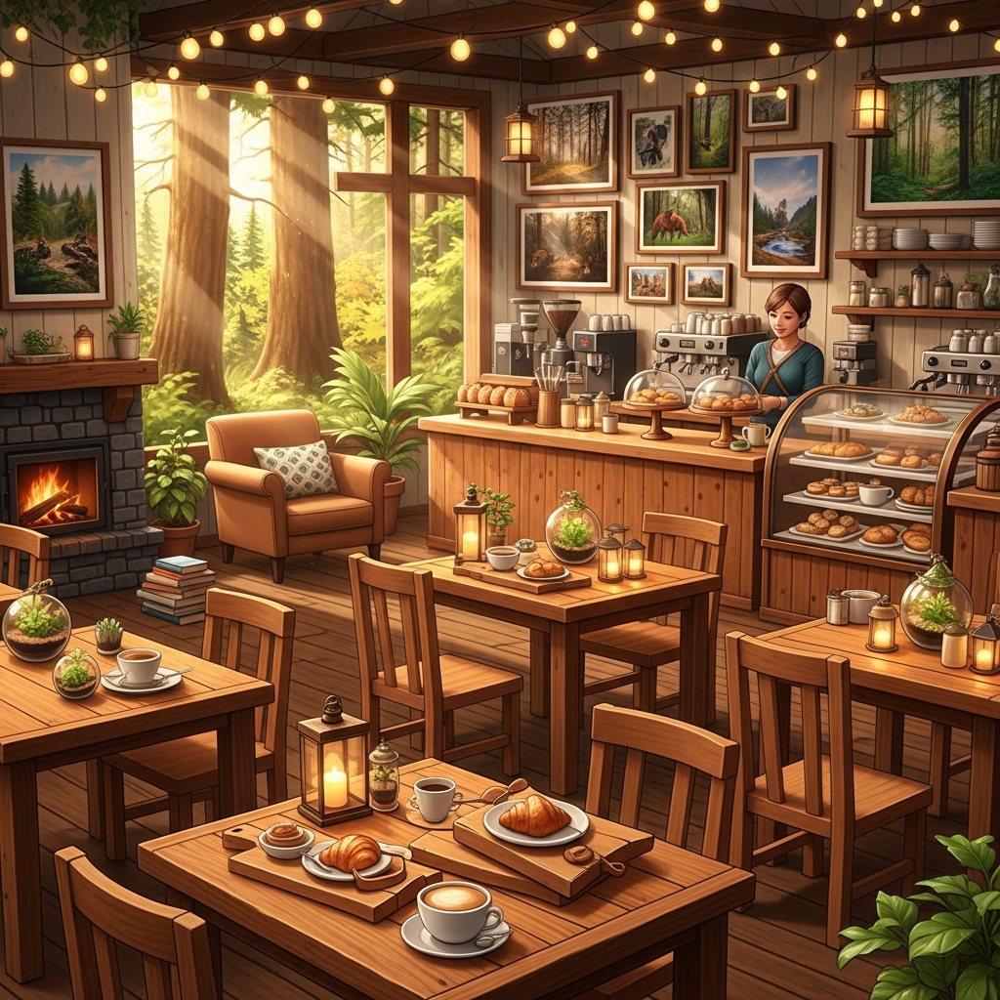
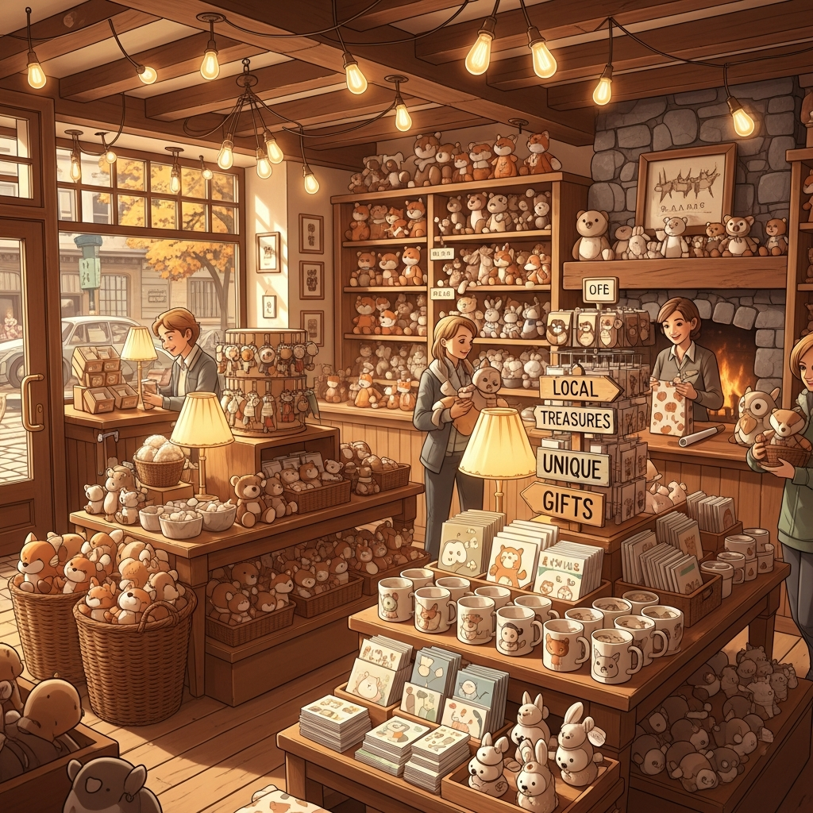
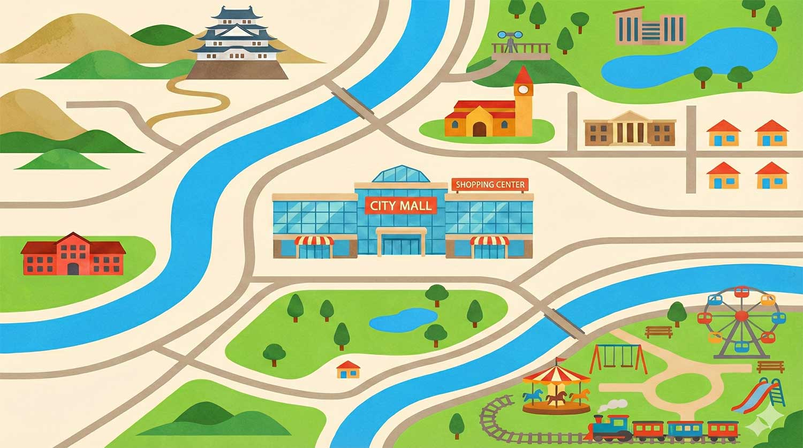

可愛動物互動區
在這裡您可以近距離接觸水豚、天竺鼠等溫馴小動物，體驗餵食的樂趣。



位於森林深處的小型動物園
可愛的動物們正期待著您的到來
週末活動熱烈舉辦中

提供特製動物造型甜點與香醇咖啡，讓您在芬多精中享受悠閒午後。

精選各式獨家動物周邊商品，將療癒的回憶化作實體帶回家。


| 水豚君泡湯秀 | 春天微涼的季節，來看水豚君們泡在柚子溫泉裡發呆的療癒模樣。每日下午 14:00 準時開始。 |
|---|---|
| 狐獴守衛隊見面會 | 由專業保育員解說狐獴的生態習性，幸運的話還能看到牠們站立站崗的可愛姿態！每日上午 10:30。 |
| 小熊貓餵食體驗 | 每日限量 20 名，報名即可親自餵食活潑好動的小熊貓，並可與牠們近距離合影留念。需提前預約。 |
| 水豚君泡湯秀 | 春天微涼的季節，來看水豚君們泡在柚子溫泉裡發呆的療癒模樣。每日下午 14:00 準時開始。 |
|---|---|
| 狐獴守衛隊見面會 | 由專業保育員解說狐獴的生態習性，幸運的話還能看到牠們站立站崗的可愛姿態！每日上午 10:30。 |
| 小熊貓餵食體驗 | 每日限量 20 名，報名即可親自餵食活潑好動的小熊貓，並可與牠們近距離合影留念。需提前預約。 |
來動物園玩，也可以順道造訪周邊的美麗景點。
